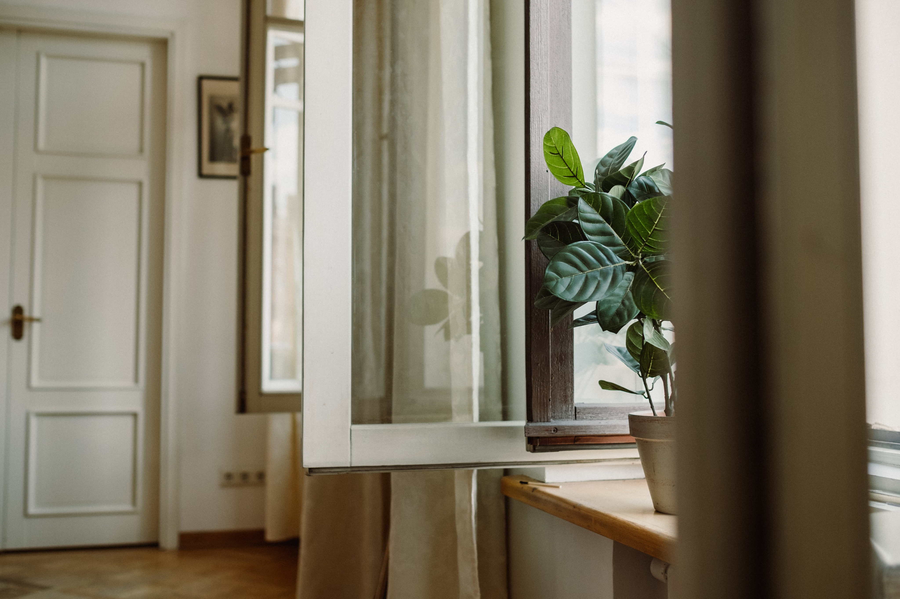

Find den rette plads
Undersøg lyset, før du vælger din plante.
Se begynderguiden →Begynd med én plante. Få hjælp til at finde den rette plads, vælge det nødvendige udstyr og tage de første skridt.
Kom i gang
Undersøg lyset, før du vælger din plante.
Se begynderguiden →Se, hvad du skal bruge til din første plante.
Se udstyr →Følg guiden til at placere og passe én plante.
Start planteprojektet →